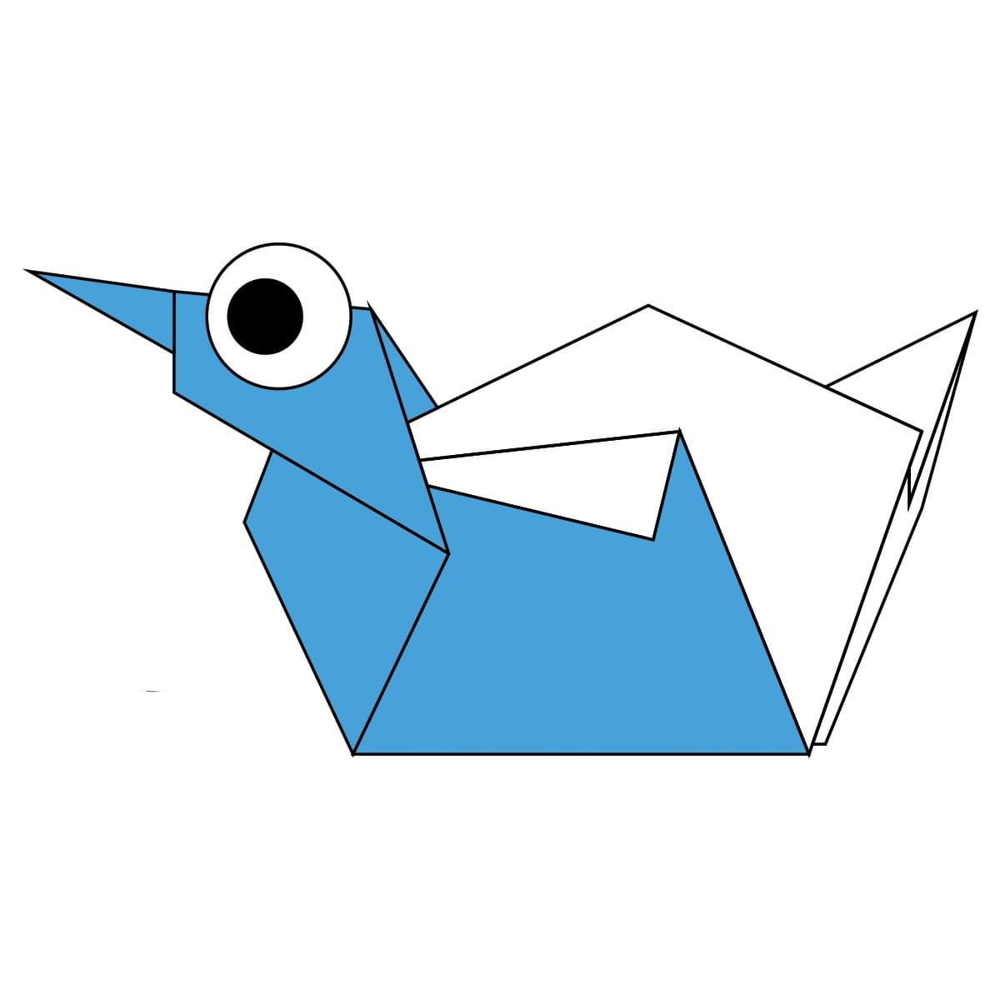
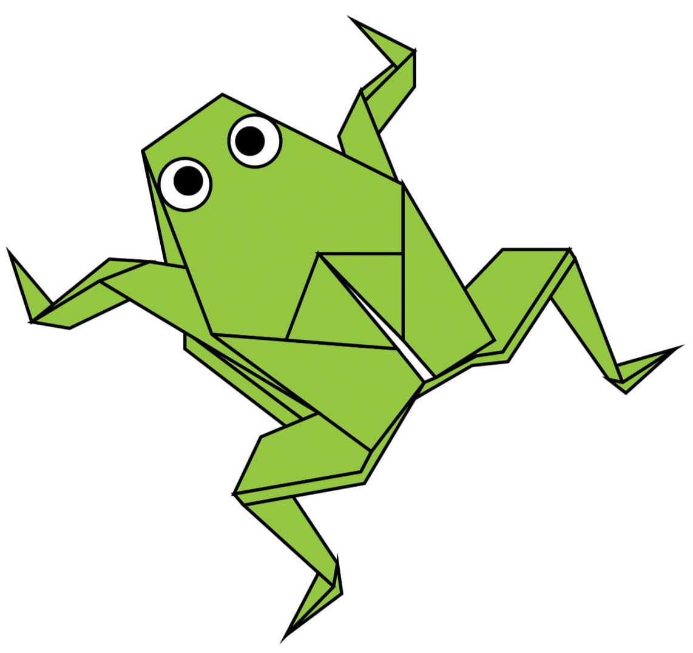
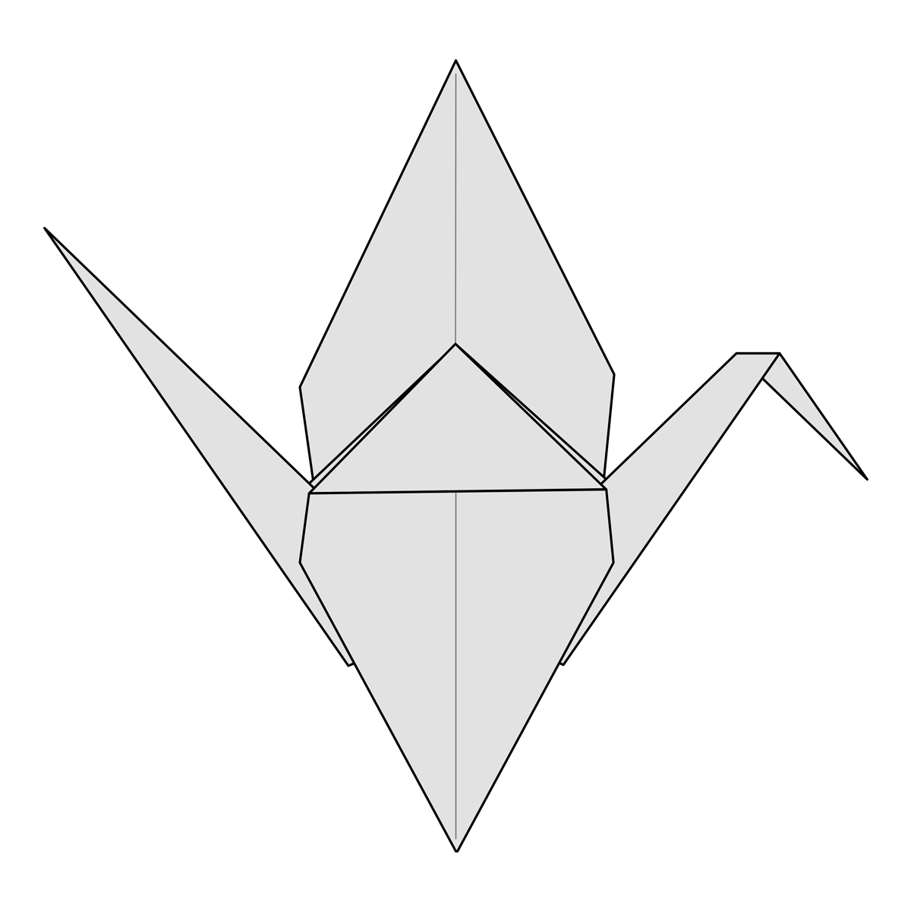

Origami Designs
About Us
Follow Us

Origami Chameleon
Interesting Facts about Chameleons
- Chameleons are reptiles that are part of the iguana suborder
- Changing skin color is an important part of communication among chameleons
- Most chameleons have a prehensile tail that they use to wrap around tree branches

Origami Cicada
Interesting Facts about Cicadas
- The loud whirring or buzzing sound you hear is an all-male cicada chorus
- Most have red-orange eyes, but occasionally cicadas have blue, white or grayish eyes
- Female cicadas may be attracted to the sound of motors.

Origami Pigeon
Interesting Facts about Pidgeons
- Pidgeons are incredibly complex and intelligent animals.
- Pidgeons are reknowned for their outstanding navigational abilities
- Pidgeons have excellent hearing

Origami Duck
Interesting Facts about Ducks
- A duck's feathers are so waterproof that even when the duck dives underwater, the downy underlayer of feathers right next to the skin will stay completely dry.
- A male duck is called a drake, a female duck a hen, and a baby duck a duckling.
- Ducks are omnivorous, opportunistic eaters and will eat grass, aquatic plants, insects, seeds, fruit, fish, nuts, crustaceans, and other types of food

Origami Frog
Interesting Facts about Frogs
- Frogs absorb water through their skin so they don't need to drink.
- There is evidence that frogs have roamed the Earth for more than 200 million years, at least as long as the dinosaurs.
- A frog's call is unique to its species, and some frog calls can be heard up to a mile away.

Origami Crane
Interesting Facts about Cranes
- Cranes are powerful flyers, with some having the ability to fly over the Himalayas.
- The mating dance of the crane is spectacular.
-